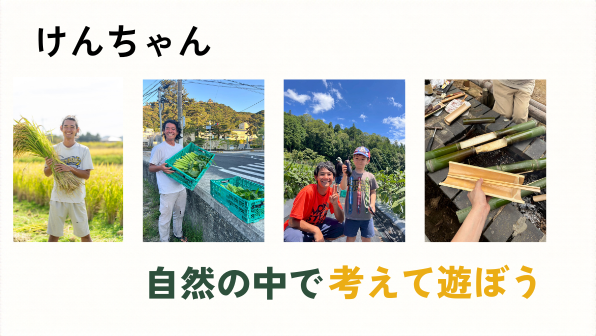
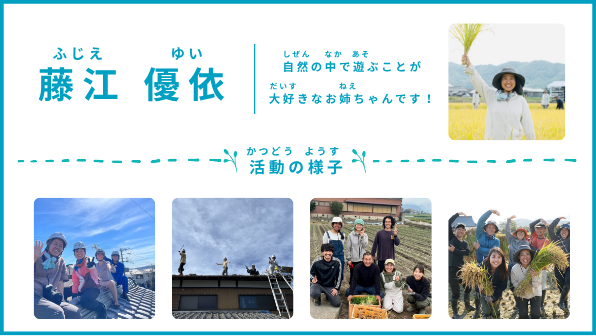
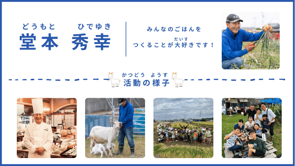
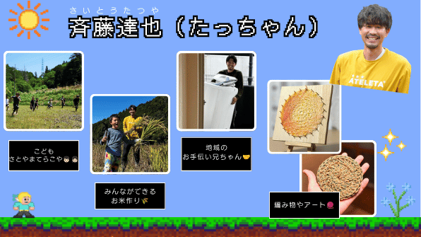

DAY 01
12月26日 土曜日
- 淡路島到着
- ヤギ牧場で遊ぶ
お弁当を食べて、動物や自然とふれあう時間。
- 収穫体験＆ごはんづくり
野菜を収穫して、焚き火でカレーづくり。
- みんなで夜ごはん
- おふろ・お泊まり
大きなおふろに入って、お泊まりのおうちへ。

SATOYAMA MIRACLE SCHOOL · AWAJI
冬休み、島まるごと学びの場へ。
里山みらくる小学校の
淡路島修学旅行
2026.12.26 土 — 12.27 日
ヤギと出会い、野菜を収穫し、火を囲む。
「やってみたい」を持ち寄って、
みんなでつくる、２日間。

里山を教科書に、いのちを先生に。
この旅で大切にしたいこと
オンラインでつながってきた仲間と、今度は淡路島の自然の中へ。生き物に触れたり、ごはんをつくったり。いつもの暮らしの一つひとつが、発見の入り口です。
２日目は、海・山・川・ヤギ牧場から、好きな場所と遊びをみんなで考える時間。自分で選び、友だちと相談し、やってみる。大人は、答えを先に渡すのではなく、そばで見守る存在に。子どもたちの気持ちを大切にする修学旅行です。

旅の体験
ヤギやトリがいる、自然いっぱいの牧場へ。みんなでお弁当を食べて、動物と遊んだり、鬼ごっこをしたり。思いっきり自由に遊びます。
畑の野菜を自分たちで収穫。焚き火でごはんを炊いて、みんなでカレーをつくります。「いただきます」が、ちょっと特別になる時間です。
海、山、川、ヤギ牧場。好きな場所で、好きな遊びを。大人も一緒に考えながら、子どもたちの「やってみたい」を広げます。
２日間のスケジュール
説明会のタイムテーブルを、そのまま掲載しています。天候などにより内容が変わる場合があります。
お弁当を食べて、動物や自然とふれあう時間。
野菜を収穫して、焚き火でカレーづくり。
大きなおふろに入って、お泊まりのおうちへ。
みんなで迎える、島の朝。
海・山・川・ヤギ牧場から選んで、みんなで考え、自由に遊ぼう。
どこで、何をして遊ぶか。
その時間も、旅の楽しみのひとつ。
※到着・出発時刻は淡路島での予定です。出発地ごとの集合・移動については、参加案内をご確認ください。
雨の日にも、わくわくを。
雨天時は、室内遊びやワークショップへ。糸かけアートは、木の板に打った釘へ好きな色の糸をかけて、模様をつくる体験です。
色を選ぶ楽しさ、形が生まれる驚き、完成したときのうれしさ。正解のないものづくりに、夢中になってみよう。
糸かけアートやカードゲームなどを予定しています。当日の状況に合わせて実施内容を調整します。
一緒に過ごす仲間
自然の中で遊ぶこと、ごはんをつくること、地域の暮らし。好きなことを持ち寄る仲間が、この旅を一緒につくります。

淡路島で自然活動やフリースクールの支援に取り組んでいます。「自然の中で考えて遊ぼう」を合言葉に、子どもたちの自由な遊びを見守ります。

自然の中で遊ぶことが大好きなお姉ちゃん。

みんなのごはんをつくることが大好き。

こどもさとやまてらこや、お米づくり、地域のお手伝い、編み物やアート。
説明会アーカイブ
限定公開修学旅行への想いや、２日間の過ごし方をお話しした説明会です。
当日参加できなかった方も、もう一度確認したい方も、ぜひご覧ください。
動画が再生できない場合は「YouTubeで見る」からご覧ください。
参加案内
よくあるご質問
はい。12月26日11:00からのヤギ牧場での活動は、日帰りで参加できます。学年制限はありません。
宿泊は小学３〜６年生、子ども７名までの予定です。お申し込みは参加フォームからお願いします。
集合・乗り合わせ・持ち物の詳細は、お申し込み後にご案内します。ご不明な点は学校へお問い合わせください。
室内遊びや、糸かけアートなどのワークショップを予定しています。天候と子どもたちの様子に合わせて内容を調整します。
子どもの基本参加費は無料を予定しており、寄付は任意です。食費や交通費を寄付で支える方針です。出発地や参加方法による費用の扱い、お小遣いなどの個人負担については、お申し込み時にご確認ください。
この旅を応援する
誰もが学びに出会えるように。今回の修学旅行は、寄付や仲間の協力を力にしてつくっています。応援は任意です。活動を紹介することも、次の出会いにつながります。
応援・寄付の案内を見る ↗